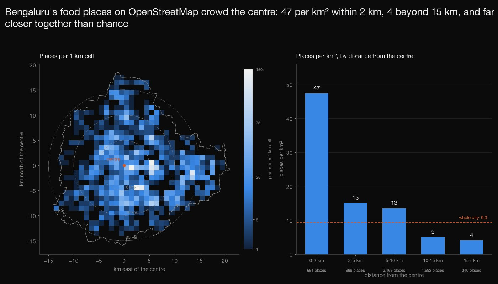
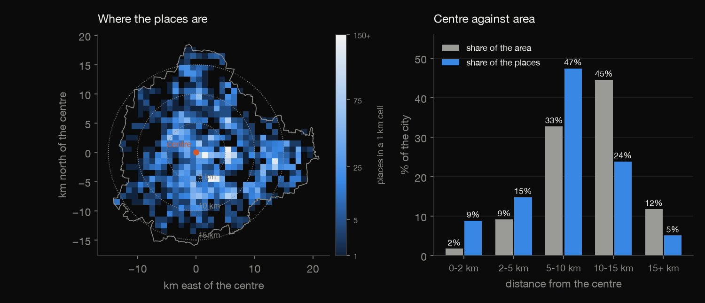
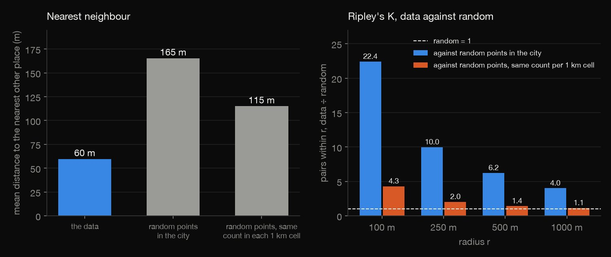
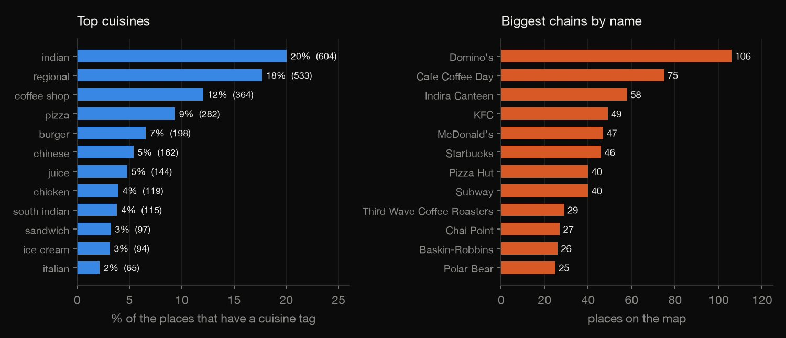
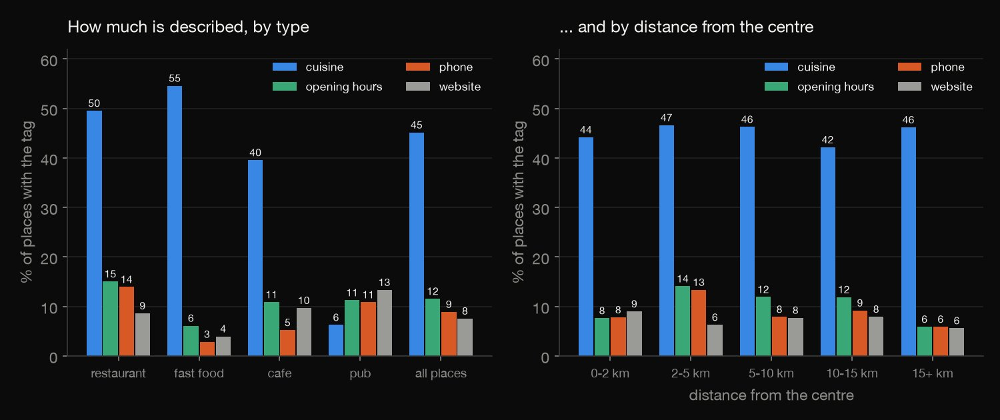
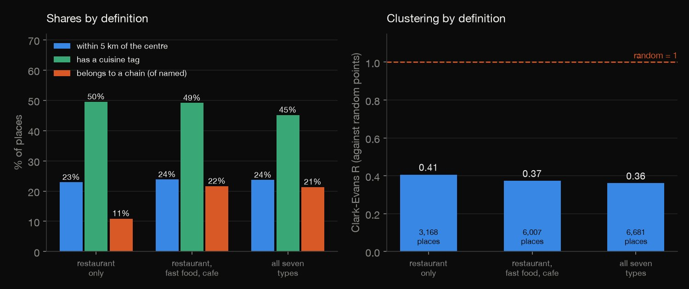

Python · Geospatial · 2026-10
Where Do Bengaluru's Food Places Cluster?
Of 6,681 food places on OpenStreetMap in Bengaluru, density falls from 47 per km² within 2 km of the centre to 4 beyond 15 km; a place's nearest neighbour is 60 m away against 165 m for random points (115 m allowing for 1 km density), and 45% say what they serve.

OpenStreetMap is volunteer-mapped and uneven: a missing place is not a missing restaurant, so density mixes mapping effort with eating out. There are no ratings or prices, and the scraped Zomato file of the original task is not used. Only seven amenity types as nodes and ways; chain counts are exact name repeats (a lower bound). Data: (c) OpenStreetMap contributors, ODbL 1.0, via the Overpass API, snapshot 2026-10-04; aggregates only.
01 — The problem
Where food gets mapped says where people eat, shop and meet, and how much of a city a volunteer map describes. Where are Bengaluru's food places, do they cluster more than chance and more than the city's uneven density explains, and how much of each is actually described?
The task follows GeeksforGeeks' "Zomato Data Analysis". The usual file is scraped Zomato listings of Bangalore restaurants, which is not used (scraping Zomato is not allowed here); OpenStreetMap, through its Overpass API, is the real, open stand-in, with places and locations but no ratings or prices.
02 — What I built
One snapshot of the map, five questions:
- The audit: the boundary stitched into a polygon of 719 km², every place tested against it, duplicates, stacked places and missing names counted.
- Where: places per 1 km cell and per km² in distance rings, measured against the polygon's own area.
- Clustering: nearest-neighbour distances and Ripley's K against 19 random sets inside the city and 19 that keep each 1 km cell's count.
- What and who: cuisine tags, chains by repeated name, and how completely name, cuisine, hours, phone and website are filled in.
- Check:
check.pyrecounts all 1,881 numbers in plain Python, including every pair of places by brute force.
03 — How it was built
- 01
Ask Overpass for the food places
Two polite queries with a descriptive User-Agent: every node and way tagged restaurant, cafe, fast_food, bar, pub, food_court or ice_cream inside the OSM relation for Bengaluru, and the relation's own outline. The answers (2.2 MB, OSM timestamp 2026-10-04 05:43 UTC) are fetched, never committed, and frozen with checksums, because the map changes every minute.
"food_places.json": f'[out:json][timeout:300];area(3607902476)->.a;(node["amenity"~"^({TYPES})$"](area.a);way["amenity"~"^({TYPES})$"](area.a););out center tags;', - 02
Build the city's polygon and keep the places inside
The boundary's 51 outer ways are stitched into one closed ring (4,980 vertices, 719 km² by the shoelace formula) in metres about the relation's own centre node, and every place is tested by ray casting; the one place whose centre fell outside is dropped, and a way is placed at the centre of its bounding box.
ok = inside(np.array([p["x"] for p in P]), np.array([p["y"] for p in P])) - 03
Measure the rings on a raster
Ring areas are not circles clipped by eye: a 250 m raster of the polygon is scanned row by row, and each cell centre falls in a ring by its distance from the centre, so places per km² divide by the area actually inside the city.
area_r = Counter(ring_of(math.hypot(x, y)) for x, y in ras) - 04
Compare with random points in the same city
Nearest-neighbour distances and Ripley's K are computed for the data and for 19 sets of random points inside the same polygon (so edge effects are in both), and for 19 sets that keep the data's count in every 1 km cell, which asks about clustering beyond the city's uneven density.
simA = sim_set("A-all", n, box); counts = Counter(p["cell"] for p in P); simB = [sim_cells(counts, s) for s in range(SIMS)] - 05
Recount it all without the libraries
check.pystitches the polygon another way, ray-casts every place with different code, finds every nearest neighbour and pair count by brute force over all 22,314,540 pairs, and redraws the random sets from the same seeds: 1,881 numbers to a relative tolerance of 1e-9.nnd, pairs, dup = brute(pts, names)
04 — Results
The centre is dense, but most places are mid-ring. 6,681 places in 719 km², 9.3 per km² on average: 47 per km² within 2 km of the centre, 4 beyond 15 km. The 5 km around the centre is 11% of the area and holds 24% of the places, but the 5 to 10 km ring alone holds 47%. The busiest 5% of the 489 occupied 1 km cells hold 33% of the places; the busiest cell, 1 to 2 km east and up to 1 km south of the centre (its address tags say Brigade Road, Church Street and Mahatma Gandhi Road), holds 261.
| Ring | Per km² | Places | Area |
|---|---|---|---|
| 0-2 km | 47 | 9% | 2% |
| 2-5 km | 15 | 15% | 9% |
| 5-10 km | 13 | 47% | 33% |
| 10-15 km | 5 | 24% | 45% |
| 15+ km | 4 | 5% | 12% |

They sit far closer together than random points, and not only because the city is uneven. The mean distance to the nearest other place is 60 m (median 24 m); for random points in the same polygon it is 165 m (Clark-Evans R = 0.36, and none of 19 simulated sets comes within 104 m of the data). Random points with the same count in every 1 km cell are 115 m apart (R = 0.52), still far above the data. The table counts the data's pairs of places within a radius, and how many times more that is than in the two kinds of random set (Ripley's K; 19 sets each).
| Within | Pairs | vs city | vs cells |
|---|---|---|---|
| 100 m | 21,713 | 22.4× | 4.3× |
| 250 m | 60,003 | 10.0× | 2.0× |
| 500 m | 148,934 | 6.2× | 1.4× |
| 1000 m | 375,462 | 4.0× | 1.1× |

What they serve, and who runs them. Only 45% of the places say what they serve; of those, indian 20%, regional 18%, coffee shop 12%, pizza 9%, burger 7%; a place with several cuisines counts under each. 111 names occur at least 5 times, on 1,400 places: 21% of the named places, 16% within 2 km of the centre and 25% beyond 15 km. Spelling variants count as different names, so that is a lower bound.

How much of the map is described. 98% of the places have a name, 45% a cuisine, 11.5% opening hours, 8.9% a phone and 7.5% a website; only 123 (1.8%) have all five. The table gives the share with a cuisine tag and with opening hours by type; bars and food courts have no cuisine tag at all. By distance, the cuisine share is flat (42% to 47%), but opening hours are on 14% of places at 2 to 5 km and 6% beyond 15 km.
| Type | Places | Cuisine | Hours |
|---|---|---|---|
| Restaurant | 3,168 | 50% | 15% |
| Fast food | 1,724 | 55% | 6% |
| Cafe | 1,115 | 40% | 11% |
| Pub | 240 | 6% | 11% |
| Ice cream | 195 | 26% | 10% |
| Bar | 191 | 0% | 6% |
| Food court | 48 | 0% | 19% |
| All | 6,681 | 45% | 12% |

Stable across the definition, except the chain share. With restaurants only, restaurants plus fast food and cafes, or all seven types, 23%, 24% and 24% of the places lie within 5 km of the centre and Clark-Evans R is 0.41, 0.37 and 0.36. The chain share of named places doubles once fast food and cafes are in. The traps: 47 pairs of same-name places within 50 m of each other (88 places, kept in every count), 11 places on exactly another's coordinates, 126 without a name.
| Definition | Places | Chains | R |
|---|---|---|---|
| Restaurants | 3,168 | 11% | 0.41 |
| + fast food, cafe | 6,007 | 22% | 0.37 |
| All seven types | 6,681 | 21% | 0.36 |

05 — What I'd do next
- Add a reference layer (all shops, or the road network) as the baseline, to separate clustering of food places from clustering of everything along main roads.
- Compare the same measures for other Indian cities, to see whether Bengaluru's centre-to-edge fall is typical or whether its mapping is unusually even.
- Track the map over time (OSM history) to see how much of the density gradient is mappers arriving rather than places opening.